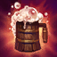
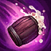
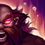
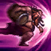
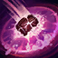

Gragas The Rabble Rouser
Equal parts jolly and imposing, Gragas is a massive, rowdy brewmaster on his own quest for the perfect pint of ale.Hailing from parts unknown, he now searches for rare ingredients among the unblemished wastes of the Freljord, trying each recipe as he goes. Often intoxicated and extremely impulsive, he is legendary for the brawls he starts, which often end in all-night parties and widespread property damage. Any appearance from Gragas must surely foreshadow drinking and destruction—in that order.
Gragas' Abilities
- Happy Hour

Gragas periodically heals upon using a skill.
- Barrel Roll

Gragas rolls his cask to a location, which can be activated to explode or will explode on its own after 4 seconds.
- Drunken Rage

Gragas guzzles down brew from his cask for 1 second.
- Body Slam

Gragas charges to a location and collides with the first enemy unit he comes across.
- Explosive Cask

Gragas hurls his cask to a location, dealing damage and knocking back enemies caught in the blast radius.